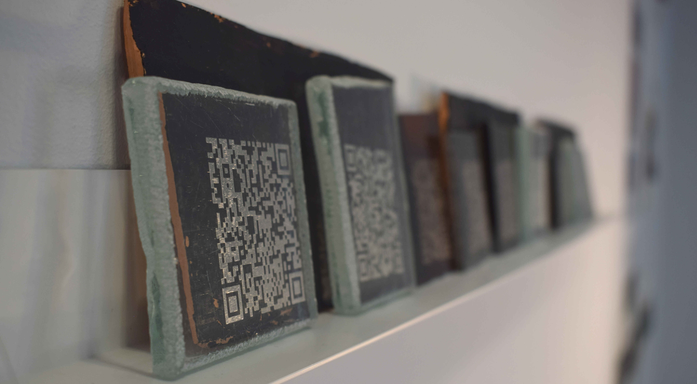
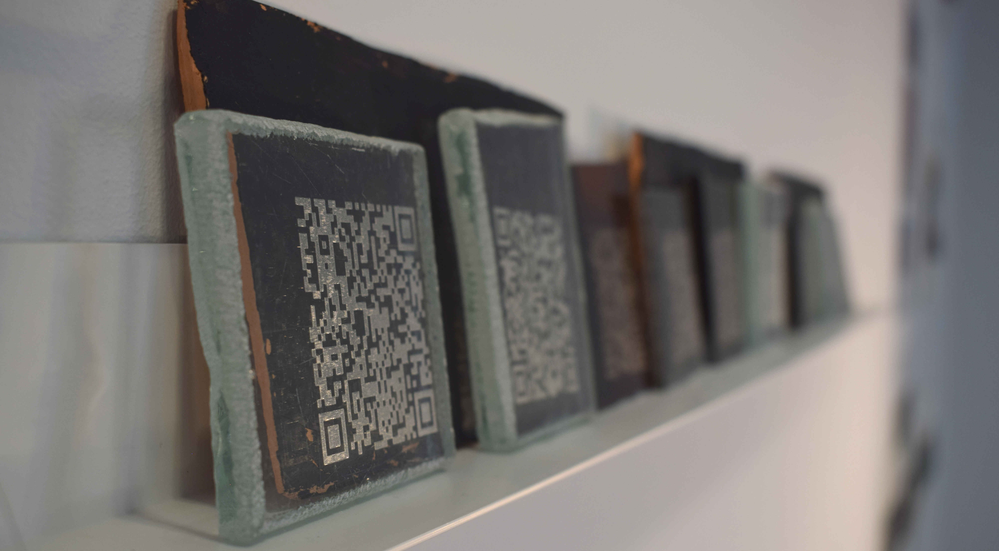
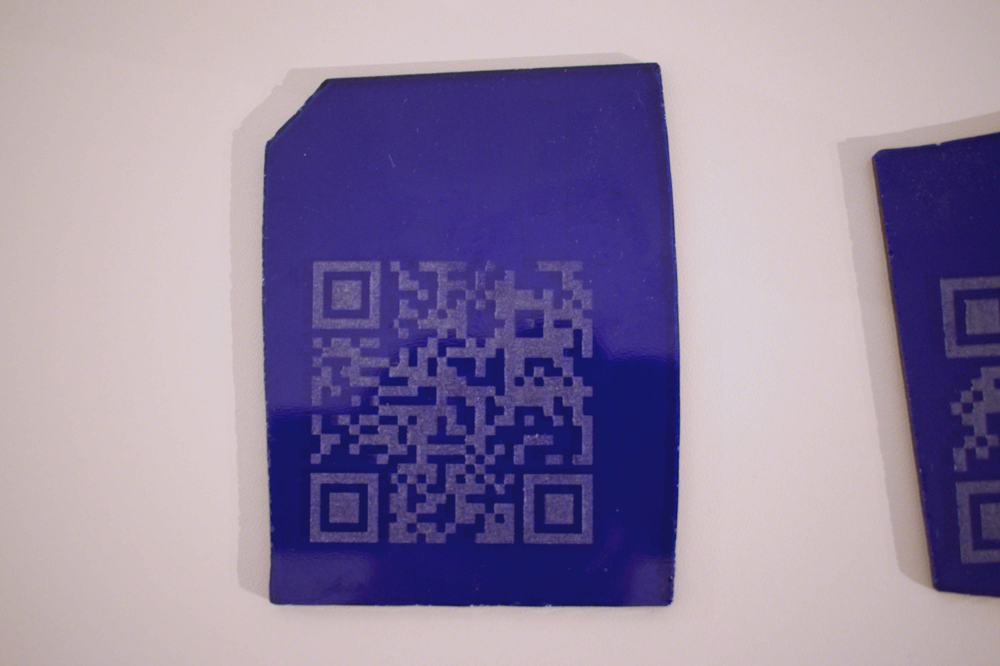
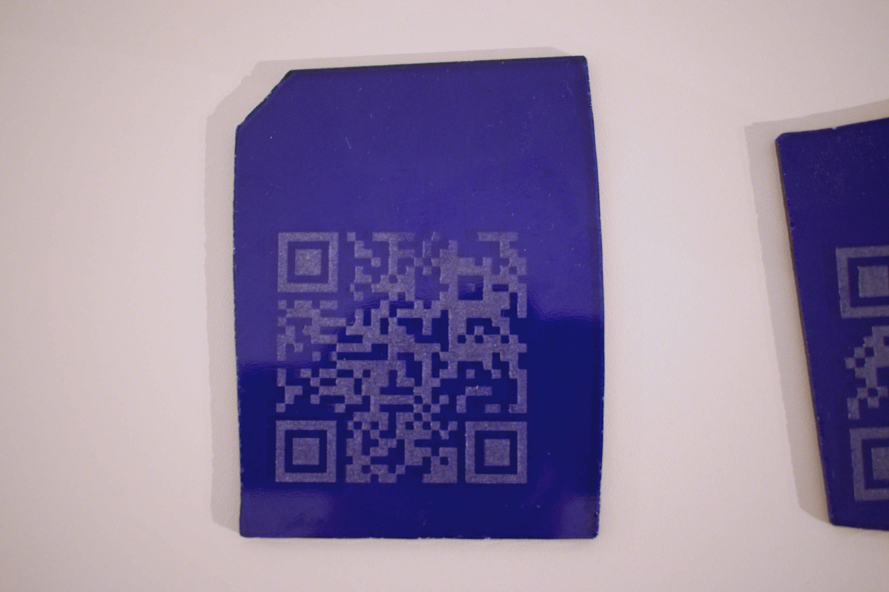

Prompt
Conforme o dicionário, fresta é uma abertura estreita que permite a passagem de luz e ar; fenda, fisga, frincha, ou, simplesmente, uma abertura estreita em muro ou telhado para ventilação e iluminação. Ao contemplar esses contextos, considera-se justo adicionar o seguinte: fresta é também o espaço entre, na fronteira de algo quase unido, ainda que separado. Compreende-se, então, que a aplicação deste substantivo vai além de um nome para a presente exposição, estendendo-se à dinâmica do trabalho realizado pelo Colectivo Gabiru.
O modus operandi elaborado entre os integrantes do grupo, durante os três meses de residência no Bairro do Rego, teve em sua centralidade o empréstimo e a troca de olhares e conhecimentos com o outro, uma simbiose. Com o passar dos dias, tal dinâmica se moldou às potencialidades individuais, resultando em um trabalho marcado pelas subjetividades de cada componente. Mesmo que a autoria não seja nítida ou delimitada, ainda é possível identificar os elementos de seus integrantes nos detalhes. Assim, a fresta é também essa lacuna que faz o convite à uma espiada curiosa, aguçando a imaginação para a descoberta.
Quando o Gabiru adentrou ao Bairro do Rego pela primeira vez, o observaram com a surpresa dos sentidos de um estrangeiro. Em uma rota sem destino definido, coletaram as especificidades da região e, em suas próprias suposições, criaram um cenário sobre o passado e futuro próximo por meio das construções tradicionais e as que estão em pulsante desenvolvimento entre os andaimes. Compreenderam também que o ruído dos comboios e dos aviões faz parte da marcante personalidade desse lugar. Com o passar dos dias e a vivência alargada, perceberam a multiculturalidade de seus moradores e a vida do bairro. Os dias se passaram, e com o olhar de quem espreita curiosamente algo pela brecha, iniciaram o processo criativo e a produção de obras.

Antes de avançarmos na descrição de suportes para a composição das obras, é válido notar um uso da tecnologia que transcende o encantamento pelas máquinas, entendendo que, sobretudo, a inteligência é humana. Hardwares, softwares, algoritmos, etc., são elaborados pelo ser humano. O uso dos meios tecnológicos, aqui, não se refere apenas às máquinas, mas sim à capacidade intelectual, técnica e criativa dos humanos, sendo por meio dessa compreensão que estes estão em uso, de modo experimental e, sobretudo, crítico.
Assim, durante 90 dias, o Coletivo Gabiru viveu, descobriu, coletou e inventou novos significados para o Bairro do Rego. Todos os trabalhos que compõem a exposição partiram dos elementos visuais, sonoros e simbólicos disponibilizados pela dinâmica desta localidade. E, como quem evidencia o devido mérito do diálogo entre as tecnologias digitais e manuais, foram utilizados algoritmos para construção de imagens e lasers para marcação de QR codes, mas também cerâmicas, que com sua carga simbólica, oferecem a vagarosidade do tempo e da memória. Para algo que não se pode ver, mas está indiscutivelmente presente no bairro, a dinâmica do som também forneceu elementos para a composição das peças em exposição. Por último, entre as caminhadas à deriva, encontrou-se a ideia de arqueologia dos despropósitos, na qual, envolveu o grupo numa espécie de caça aos tesouros invisíveis do cotidiano. Portanto, foi por meio de um olhar vagaroso, pelas frestas dos significados, que se fez possível imaginar em pedras, cacos de antigas construções e pedaços de concreto das novas estruturas o entrelaçar entre o passado, o presente e, quem sabe, o futuro no Bairro do Rego.

“Fresta" é uma exposição do Coletivo Gabiru, formado por Thaynã Targa, Pablo Diaz e Fábio Curi, resultado da Residência Artística Artes Tecnológicas e Multimédia - LAAR oferecida pela Câmara Municipal de Lisboa.
Agradecimentos do grupo ao Bairro do Rego e à sua comunidade, às equipas da Câmara Municipal de Lisboa/Direção Municipal de Cultura, da FCT FABLAB, e do Espaço Avenidas.
Colectivo Gabiru
Lisboa, dezembro de 2023


 

 
